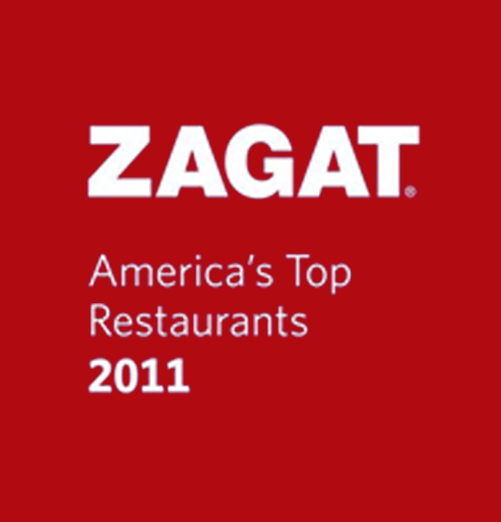

아웃백은 질 좋은 스테이크를 제공하고자 했던
초심을 중요하게 생각합니다
-
1980
Dream
1980년대 크리스 설리반, 로버트 바샴, 팀 가논 그리고 트루디 쿠퍼라는 4명의 친구들은 요식업계에서 경력을 쌓아 자신들만의 레스토랑을 만들고자 하는 꿈 아래 의기투합하였습니다.
-
1988
Outback Steak
1988년 캐쥬얼한 분위기에 질 좋은 스테이크를 내어 놓는 레스토랑이 플로리다 템파시에 문을 열었습니다.
이곳이 첫 번째 아웃백 스테이크하우스 입니다. -
1997
widely loved
1997년, 한국에 첫 번째 아웃백이 소개된 해입니다.
국내 최초 단일브랜드 최대 매장, 최대 매출의 기록을 세우며 지금은 전국 80여개의 매장이 운영되고 있습니다.아웃백 스테이크하우스는 캐주얼한 분위기에서 질 좋은 스테이크를 제공하고자 했던 초심을 중요하게 생각합니다.
최고의 음식은 최상의 재료와 최선을 다하는 태도에 있습니다.최소 3주 이상 숙성한 스테이크 매일 아침 6시간 이상 끓여내는 수프까지 20년 넘게 철저하게 지켜온 음식의 맛과 온도 그리고 타협하지 않는 노하우는 지금 이 순간까지 아웃백이 당신에게 최고의 맛을 제공할 수 있는 이유입니다.
-
2013
Zagat Survey도 인정한 Outback Story
 전 세계적인 권위를 인정받는 미국 ‘Zagat Survey’는 2013년 아웃백 스테이크하우스의 <음식>, <실내 분위기>, <서비스> 평가항목 모두에 최고점을 부여하였습니다.
실제로 아웃백에 방문했던 고객들이 이를 평가하기 때문에 모든 부문 에서 최고점을 받는 것은 매우 영예스러운 일이죠.4년 연속 미국 체인레스토랑 중 최고의 스테이크하우스로 선정된 놀 라운 기록을 진짜 스테이크 하우스, Outback Steakhouse이기에 가능합니다.
-
2019
Outback Delivery 런칭
2019년 9월, 아웃백 딜리버리 서비스를 선보였습니다.
수도권 내 아웃백 일부 직영점에서 시작한 딜리버리 서비스는 공유 주방을 통한 딜리버리 전용 매장을 잇따라 출점하며, 론칭 1년만에 딜리버리 전용 매장을 포함한 60여개의 매장에서 운영되고 있습니다.‘더블 머쉬룸 스테이크’, ‘멜티드 치즈 스테이크’, ‘스파이시 치킨 & 슈림프 스파게티’, ‘비프 퀘사디아’ 등 딜리버리 서비스 전용 메뉴를 출시하고, 고급스러운 디자인의 친환경 펄프 소재를 딜리버리 용기로 사용하는 등
즐거운 경험 제공을 위해 최선을 다하고 있습니다.아웃백 셰프가 직접 만든 요리를 이제 집에서도 편안하게 즐길 수 있습니다.
-
2022
Outback’s Premium Wine & Dine
아웃백은 고객의 입장부터 퇴장까지
그들의 하루를 특별하게 만들어줄 최고의 서비스를 제공하고 있습니다.특히, 와인에 특화된 프리미엄 매장에서는 한쪽 벽면을 가득 채운 웅장한 와인 셀러와 바 테이블, 고급 와인잔과 디캔터, 스테이크와 즐기기 좋은 20여종의 고급 와인을 만날 수 있습니다.
현재 갤러리아 광교점, 대전 현대아울렛점, 대구 신세계점, 남양주 현대아울렛점, 부산 신세계센텀시티점, 경기 신세계점, 용산 아이파크몰점, 동탄 롯데점, 대전 신세계점, 하남 스타필드점 총 10개 지점으로 운영하는 아웃백 프리미엄 매장은 앞으로도 확대해 나갈 예정입니다.